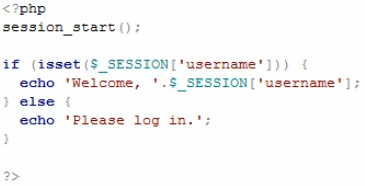

Welcome
-
"$":
- used to signify variable
- can start with underscore or letter or number
-
echo:
- is a language contruct that allows you to print to screen (can use single or double quotes)
- "" for echo-ing variables (slower)
- In double quoted strings other escape sequences are interpreted as well any variable will be replaced by their value.
- '' easiest way to sepecify a stringThis method in used when we want to the string to be exactly as it is written. When string is specified in single quotes PHP will not evaluate it or interpret escape characters except single quote with backslash (‘) and backslash(\) which has to be escaped.
- we can use tags like this in echo <strong> </strong>
-
print:
- older way to print data to screen/browser and slower and more characters to type
-
html tags in echo/print:
- we will get error with semi colon since it will think:
- echo "<input type = "text" name = "name">";
- the "" on type = "text" ends the quotations
- FIX: use type = 'text' inside, use echo '', or escape charaters \" (preferable to use 2nd or last)
-
comments:
- use // or /* */
-
in error reporting:
- if no errors appear but something is wrong check in php.ini file and make sure error_reporting is not set to 0 also turn error_reporting off when done with coding so viewers dont see errors if page doesnt load
- for security reasons we turn error_reporting to 0
- we can change it dynamically in code with "error_reporting('E_ALL');"
-
concatenation:
- We concat with the dot "."
- |ex| $day = 'Saturday'; $date = 4; $year = 2018;
- with " " we don't need the dot
- ' ' is faster and with complex code ' ' may be better
-
echo 'The date is '.$day.' '.$date.' '.$year;
-
OR
-
if statements
- same concept as other language
-
assignment operator:
- +=, -=, etc exist in php
- .= is a concat
-
comparison operator
- !=, ==, <, >, <=, >=
-
arithmetic operators:
- same concept as other lang (+, -, /, *, %)
-
Logical operator:
- && or keyword "AND"
- || or keyword "OR"
-
Triple equals:
- same as == but compares data type as well
-
while loop: same as other lang
- while(){}
-
do while loop:
- do{
-
//executes this first and at least once
-
for loop: same as other lang
- for(i = 0; i <= 10; i++){}
-
switch statement:
switch(case){
case 1:
something;
break;
case 2:
something;
break;
default:
}
-
die and exit functions:
- die(); and exit(); do same thing - kill rest of code - goes over them we can print with the functions by doing die('error') OR exit('error') we do this because
- |Ex| mysql_connect('localhost','root','') or exit('Could not connect to database')
- echo 'Connected!'
- this will display connected! if connection successful or exits if not
-
expression matching:
preg_match() function searches string for pattern, returning true if pattern exists, and false otherwise.
$string = 'This is a string.'
if (preg_match('/is/', $string) ){
echo 'Match Found';
}else {
echo 'No match found';
}
-
NOTE:
The solution (which other answers don't mention—at least at the time of my originally writing this) is that when PHP refers to delimiters, it's not referring to the delimiters you see in your code (which are quote marks) but the next characters inside the string. (In fact I've never seen this stated anywhere in any documentation: you have to see it in examples.) So instead of having a regular expression syntax like what you may be accustomed to from many other languages:
/something/
PHP uses strings, and then looks inside the string for another delimiter:
'/something/'
The delimiter PHP is referring to is the pair of / characters, instead of the pair of ' characters. So if you write 'something', PHP will take s as the intended delimiter and complain that you' `re not allowed to use alphanumeric characters as your delimiter. So if you want to pass (for instance) an i to show that you want a case-insensitve match, you pass it inside the string but outside of the regex delimiters:
'/something/i'
If you want to use something other than / as your delimiter, you can, such as if you're matching a URL and don't want to have to escape all the slashes:
'~something~'
-
NOTE:
-
-functions:
function functionName(argument1, argument2){
something;
return something;
}
-
-Global variables and Functions:
- user_ip is not seen by the function until "global" keyword is used

-
-String Functions:
- Syntax: str_word_count(string,return,char)
- The str_word_count() function counts the number of words in a string.
- string: required to check the string specified
- return: optional
- 0 - Default. Returns the number of words found
- 1 - Returns an array with the words from the string
- 2 - Returns an array where the key is the position of the word in the string, and value is the actual word
- char: optional. Specifies special characters to be considered as words.
- Syntax: str_shuffle(string)
- string: Required. Specifies the string to shuffle
- The str_shuffle() function randomly shuffles all the characters of a string.
- Syntax: strrev(string)
- string: Required. Specifies the string to reverse
- The strrev() function reverses a string.
- Syntax: similar_text(string1,string2,percent)
- The similar_text() function calculates the similarity between two strings.
- string1: Required. Specifies the first string to be compared
- string2: Required. Specifies the second string to be compared
- percent: Optional. Specifies a variable name for storing the similarity in percent
- Return Value: Returns the number of matching characters of two strings
- Syntax: strlen(string)
- The strlen() function returns the length of a string.
- string: Required. Specifies the string to check
- Return Value: Returns the length of a string on success, and 0 if the string is empty
- Syntax: trim(string,charlist)
- The trim() function removes whitespace and other predefined characters from both sides of a string.
- string Required. Specifies the string to check
- charlist Optional. Specifies which characters to remove from the string. If omitted, all of the following characters are removed:
- "\0" - NULL
- "\t" - tab
- "\n" - new line
- "\x0B" - vertical tab
- "\r" - carriage return
- " " - ordinary white space
- Related functions:
- ltrim() - Removes whitespace or other predefined characters from the left side of a string
- rtrim() - Removes whitespace or other predefined characters from the right side of a string
- Syntax: addslashes(string)
- The addslashes() function returns a string with backslashes in front of predefined characters.
- single quote (')
- double quote (")
- backslash (\)
- NULL
- we may want add slashes for viewing on a page
- reverse of this is "stripslashes(string)"
- string Required. Specifies the string to be escaped
- Syntax: strpos(string,find,start)
- The strpos() function finds the position of the first occurrence of a string inside another string.
- string Required. Specifies the string to search
- find Required. Specifies the string to find
- start Optional. Specifies where to begin the search
- Syntax: substr(string,start,length)
- string Required. Specifies the string to return a part of
- start Required. Specifies where to start in the string
- A positive number - Start at a specified position in the string
- A negative number - Start at a specified position from the end of the string
- 0 - Start at the first character in string
- length Optional. Specifies the length of the returned string. Default is to the end of the string.
- A positive number - The length to be returned from the start parameter
- Negative number - The length to be returned from the end of the string
- Syntax: substr_replace(string,replacement,start,length)
- The substr_replace() function replaces a part of a string with another string.
- string: Required. Specifies the string to check
- replacement: Required. Specifies the string to insert
- start: Required. Specifies where to start replacing in the string
- A positive number - Start replacing at the specified position in the string
- Negative number - Start replacing at the specified position from the end of the string
- 0 - Start replacing at the first character in the string
- length: Optional. Specifies how many characters should be replaced. Default is the same length as the string.
- A positive number - The length of string to be replaced
- A negative number - How many characters should be left at end of string after replacing
- 0 - Insert instead of replace
- Syntax: str_replace(find,replace,string,count)
- The str_replace() function replaces some characters with some other characters in a string.
- find: Required. Specifies the value to find
- replace: Required. Specifies the value to replace the value in find
- string: Required. Specifies the string to be searched
- count: Optional. A variable that counts the number of replacements
- we can have find and replace be an array. This way we can replace multiple strings have them replaced respectively
- here, "is" is being replaced with "IS", "string" is being replaced with "STRING", and "example is being replaced with ' '"
- NOTE: if you want case insensitivity, use str_ireplace(find,replace,string,count)
-
Possible values:

-
Arrays in PHP:
- arrays must be of one data type
- arrays start at index 0 and goes on
- arrays can be accessed by indexing (array[i])
-
Arrays in PHP:
-
Arrays:
- arrays must be of one data type
- arrays start at index 0 and goes on
- arrays can be accessed by indexing (array[i])
-
Associative Arrays:
- here we are asscoiating different values to differnt keys
- we do not use the indexes anymore but the key

-
Multi-Dimensional Arrays:
- basically it is an array in an array and we can access members with double [][]
-
foreach:
- The foreach loop works only on arrays, and is used to loop through each key/value pair in an array.

-
include and require:
- The include (or require) statement takes all the text/code/markup that exists in the specified file and copies it into the file that uses the include statement. Including files is very useful when you want to include the same PHP, HTML, or text on multiple pages of a website.
- The include and require statements are identical, except upon failure:
- require will produce a fatal error (E_COMPILE_ERROR) and stop the script
- include will only produce a warning (E_WARNING) and the script will continue
- If you want the program to continue even with missing files use the include statement. Otherwise use the require statement to avoid security/integrity loss in the case a key file is missing.
- Including files saves a lot of work. This means that you can create a standard header, footer, or menu file for all your web pages. Then, when the header needs to be updated, you can only update the header include file.
- Syntax: include 'filename'; OR require 'filename';
- Related Functions:
- require_once 'filename'; OR include_once 'filename';
- same fucntionalities as the require and include but checks if the file has been included or not. If included, it will not add it again but will add it if it isn't yet included.
- require once is the same as the if statement above
-
Upper/Lower case Conversion:
- Syntax: strtolower(string)
- The strtolower() function converts a string to lowercase.
- string: Required. Specifies the string to convert
- Syntax: strtoupper(string)
- The strtoupper() function converts a string to uppercase.
- string: Required. Specifies the string to convert
- Related Functions:
- strtoupper() - converts a string to uppercase
- lcfirst() - converts the first character of a string to lowercase
- ucfirst() - converts the first character of a string to uppercase
- ucwords() - converts the first character of each word in a string to uppercase
- Useful for when we need to check forms and validate fields. We don't know how the user will enter characters but we can convrt it to all upper or lower and then check.
-
foreach:
- The foreach loop works only on arrays, and is used to loop through each key/value pair in an array.
-
Time Stamp:
- time(); is the seconds from the 1st of january of 1970
- we can use the date(format,timestamp); function to convert the seconds given by the time(); into something more readable.
-
Random Number Generation:
- we use rand(); to get a random number but this random number has a upper limit which can be found out by getrandmax();
- syntax: rand(min,max); OR rand();
- min Optional. Specifies the lowest number to be returned. Default is 0
- max Optional. Specifies the highest number to be returned. Default is getrandmax()
-
$_Server:
- $_SERVER is a PHP super global variable which holds information about headers, paths, and script locations.
- $_SERVER['SCRIPT_NAME'] gives the url but without the domain name
- $_SERVER['HTTP_HOST'] gives us our domain
- we can use this to access directories
-
header:
- "Location:" header. Not only does it send this header back to the browser, but it also returns a REDIRECT (302) status code to the browser unless the 201 or a 3xx status code has already been set.
- header() must be called before any actual output is sent, either by normal HTML tags, blank lines in a file, or from PHP.
- We can use ob_start();
- This function will turn output buffering on. While output buffering is active no output is sent from the script (other than headers), instead the output is stored in an internal buffer. The contents of this internal buffer may be copied into a string variable using ob_get_contents(). To output what is stored in the internal buffer, use ob_end_flush(). Alternatively, ob_end_clean() will silently discard the buffer contents.
- Think of ob_start() as saying "Start remembering everything that would normally be outputted, but don't quite do anything with it yet."
-
IP Address:
- we can use $_SERVER('REMOTE ADDR') to get the users ip address
- blocking an ip address
- we can then make an array of ip addresses and with a foreach, check if that ip address matches
- problem with this is with shared networks(multiple computers in a room) or a proxy
- A better way to do it is to check three elements
- $_SERVER['HTTP_CLIENT_IP']: Checks actual internet ip address instead of individual computer
- $_SERVER['HTTP_X_FORWARDDED_FOR']: Checks if proxy being used
-
Getting a visitors Browser:
- $browser = get_browser(null, true); print_r($browser);
- this gets us an Associative array where we can look up browser to determine what browser is used
- this checks if the user is using chrome
- useful for compatability issues on different browsers and allows us to notify to the user to use the right browser

-
Using $_GET:
- this will allow us to get the fields we place on a page
- we need to check: (below 1, 2, 3)
- we can use htmlentities to make sure the user cannot enter in code or tags to modify our form
- makes sure that the entities are displayed as opposed to tags

-
Using $_POST:
- Not included in URL
- good for passwords, long registration forms, etc
-
Working with form data:
- action is where the form will submit to when the submit button is clicked
- method will be GET or POST depending on how the info is sent
- GET will be visible on the URL while POST will not be
-
Sessions in PHP:
- Sessions are stored on the servers so they are hidden from the users
- to set a session, we have to start with session_start();
- this is now a session name and exists only on this page now but since it is a session, it can bhe accessed by any of our other pages at any time even if we don't declare it
- we will need to include session_start(); even when we are reading back 
- useful for user log in/keep them logged in
- Above code shows that $_SESSION['username'] must be set to do something

- to uunset a session we still need to use session_start();
- To unset a session we can use unset(); to unset a particular session or session_destroy(); to unset all session related to that user/server
-
Cookies:
- A cookie is a piece of data or file that is stored with specific information and is unique to you and the website that you are viewing
- When viewing a website, and depending on the expiration date of the cookie, that piece of data will be relayed from your computer to the website. This way, wesites can store data about users or your specific prefrences on your computer for later access
- the difference is that sessions are closed as asoon as broswer is closed and the connection is off with the server. Cookies on the other hand, can be stored for longer times (perhaps years).
- To set a cookie, setcookie(name,value,expire,path,domain,secure,httponly);
- name Required. Specifies the name of the cookie
- value Optional. Specifies the value of the cookie
- expire Optional. Specifies when the cookie expires. The value: time()+86400*30, will set the cookie to expire in 30 days. If this parameter is omitted or set to 0, the cookie will expire at the end of the session (when the browser closes). Default is 0
- path Optional. Specifies the server path of the cookie. If set to "/", the cookie will be available within the entire domain. If set to "/php/", the cookie will only be available within the php directory and all sub-directories of php. The default value is the current directory that the cookie is being set in
- domain Optional. Specifies the domain name of the cookie. To make the cookie available on all subdomains of example.com, set domain to "example.com". Setting it to www.example.com will make the cookie only available in the www subdomain
- secure Optional. Specifies whether or not the cookie should only be transmitted over a secure HTTPS connection. TRUE indicates that the cookie will only be set if a secure connection exists. Default is FALSE
- httponly Optional. If set to TRUE the cookie will be accessible only through the HTTP protocol (the cookie will not be accessible by scripting languages). This setting can help to reduce identity theft through XSS attacks. Default is FALSE
- cookies are stored on user computers so it is dangerous for sensative info
- to unset a cookie we can set the (-) time
- we use the unset cookie for log out buttons for example
-
Interpretting a File:
- to do so, we use fopen(filename,mode,include_path,context)
- The fopen() function opens a file or URL. If fopen() fails, it returns FALSE and an error on failure. You can hide the error output by adding an '@' in front of the function name.
- filename: Required. Specifies the file or URL to open
- mode: Required. Specifies the type of access you require to the file/stream.
- "r" (Read only. Starts at the beginning of the file)
- "r+" (Read/Write. Starts at the beginning of the file)
- "w" (Write only. Opens and clears the contents of file; or creates a new file if it doesn't exist)
- "w+" (Read/Write. Opens and clears the contents of file; or creates a new file if it doesn't exist)
- "a" (Write only. Opens and writes to the end of the file or creates a new file if it doesn't exist)
- "a+" (Read/Write. Preserves file content by writing to the end of the file)
- "x" (Write only. Creates a new file. Returns FALSE and an error if file already exists)
- "x+" (Read/Write. Creates a new file. Returns FALSE and an error if file already exists)
- include_path: Optional. Set this parameter to '1' if you want to search for the file in the include_path (in php.ini) as well
- context: Optional. Specifies the context of the file handle. Context is a set of options that can modify the behavior of a stream
- after opening the file, we can write to it using fwrite(file,string,length)
- The fwrite(file,string,length) writes to an open file. The function will stop at the end of the file or when it reaches the specified length, whichever comes first. This function returns the number of bytes written, or FALSE on failure.
- file: Required. Specifies the open file to write to
- length: Optional. Specifies the maximum number of bytes to write
- string: Required. Specifies the string to write to the open file
- use ."/n" to start at a new line
- make sure to use fclose(); to close the file opened
- the difference between write and append is that write will write over everything before but append will add to the existing file
- We will need to write at some point initally but to open that file again and add to it, we will need to use append
- here, a form was initally created with a name field and a submit button. If a name is submitted, a new name will be appended to the file.
-
Possible values:
Reading from a File
- The fread() reads from an open file. The function will stop at the end of the file or when it reaches the specified length, whichever comes first. This function returns the read string, or FALSE on failure.
- fread(file,length)
- file Required. Specifies the open file to read from
- length Required. Specifies the maximum number of bytes to read
- we can use file(path,include_path,context) which reads a file into an array. Each array element contains a line from the file, with newline still attached.
- path Required. Specifies the file to read
- include_path Optional. Set this parameter to '1' if you want to search for the file in the include_path (in php.ini) as well
- context Optional. Specifies the context of the file handle. Context is a set of options that can modify the behavior of a stream. Can be skipped by using NULL.
- The explode() function breaks a string into an array.
- explode(separator,string,limit)
- separator: Required. Specifies where to break the string
- string: Required. The string to split
- limit: Optional. Specifies the number of array elements to return. Possible values:
- Greater than 0 - Returns an array with a maximum of limit element(s)
- Less than 0 - Returns an array except for the last -limit elements()
- 0 - Returns an array with one element
- The implode() function returns a string from the elements of an array.
- implode(separator,array)
- separator: Optional. Specifies what to put between the array elements. Default is "" (an empty string)
- array: Required. The array to join to a string
- The opendir() function opens a directory handle.
- opendir(path,context);
- path: Required. Specifies the directory path to be opened
- context: Optional. Specifies the context of the directory handle. Context is a set of options that can modify the behavior of a stream
- The readdir() function returns the name of the next entry in a directory.
- readdir(dir_handle);
- dir_handle Optional. Specifies the directory handle resource previously opened with opendir(). If this parameter is not specified, the last link opened by opendir() is assumed
- this open a directory, then lists the files in it while making a link to the file
- The file_exists() function checks whether or not a file or directory exists. This function returns TRUE if the file or directory exists, otherwise it returns FALSE.
- file_exists(path)
- path: Required. Specifies the path to check
- the above checks if file.txt exists and if not, makes file.txt and writes "Nothing" to it, and if it does, displays "file already exists."
- The unlink() function deletes a file. This function returns TRUE on success, or FALSE on failure.
- unlink(filename,context)
- filename: Required. Specifies the file to delete
- context: Optional. Specifies the context of the file handle. Context is a set of options that can modify the behavior of a stream
- NOTE: The @ symbol is the error control operator (aka the "silence" or "shut-up" operator). It makes PHP suppress any error messages (notice, warning, fatal, etc) generated by the associated expression.
- The rename() function renames a file or directory. This function returns TRUE on success, or FALSE on failure.
- rename(oldname,newname,context)
- oldname: Required. Specifies the file or directory to be renamed
- newname: Required. Specifies the new name of the file or directory
- context: Optional. Specifies the context of the file handle. Context is a set of options that can modify the behavior of a stream
Listing files:
Check if a file exists:
Delete Files:
Rename Files: -
Uploading a File:
- We can manipulate submitted files as such:
- we access the files with $_FILES[][]
- This variable is an associate double dimension array and keeps all the information related to uploaded file
- $_FILES['file']['tmp_name'] − the uploaded file in the temporary directory on the web server.
- $_FILES['file']['name'] − the actual name of the uploaded file.
- $_FILES['file']['type'] − the MIME type of the uploaded file.
- $_FILES['file']['size'] − the size in bytes of the uploaded file.
- $_FILES['file']['error'] − the error code associated with this file upload.
- The move_uploaded_file() function moves an uploaded file to a new location. This function returns TRUE on success, or FALSE on failure.
- move_uploaded_file(file,newloc)
- file: Required. Specifies the file to be moved
- newloc: Required. Specifies the new location for the file
- here we first grab the name of the file with $name, then we grab the temporary name(temporary location), then we check if the form is submitted and if the file exists. After specifying the location, we can use move_uploaded_file(); to upload
- we can do this with a combination of substr and strpos
- strpos will find the "." while substr will return the part of the string after the "." (jpg)
- we can add size resitrictions by using the $_FILES['file']['size'] and setting it to be under some restriction with a if statement
adding restrictions to what file type can be uploaded
adding restrictions to what file size can be uploaded -
Non-Unique Hit Counter:
- everytime page is refreshed, a value in text file get incremented
-
Unique Hit Counter:
- Uses the users IPaddress so we have a accurate amount of unique visitors
- here, we have a file called ip.txt which will store the ip address of visitors. We will check that our vistors ip address is not on the list, so therefore it is new. We then update the counter and update the ip.txt file to store the new ip address.
-
Creating a Database Hit Counter:
-
MD5 Encryption:
- The md5() function calculates the MD5 hash of a string. The md5() function uses the RSA Data Security, Inc. MD5 Message-Digest Algorithm.
- From RFC 1321 - The MD5 Message-Digest Algorithm: "The MD5 message-digest algorithm takes as input a message of arbitrary length and produces as output a 128-bit "fingerprint" or "message digest" of the input. The MD5 algorithm is intended for digital signature applications, where a large file must be "compressed" in a secure manner before being encrypted with a private (secret) key under a public-key cryptosystem such as RSA."
- md5(string,raw)
- string: Required. The string to be calculated
- raw: Optional. Specifies hex or binary output format:
- TRUE - Raw 16 character binary format
- FALSE - Default. 32 character hex number
- MD5 is a one way Encryption, so no way to get back to what it was
- this is useful since if anyone gains unauthorized access to server, they cannot directly view sensative information. They would be looking at the MD5 Encryption
- in real life we msut store passwords with at least 11 MD5 Encryption
-
Sending an Email:
- The mail() function allows you to send emails directly from a script.
- mail(to,subject,message,headers,parameters);
- to: Required. Specifies the receiver / receivers of the email
- message: Required. Defines the message to be sent. Each line should be separated with a LF (\n). Lines should not exceed 70 characters.
- headers: Optional. Specifies additional headers, like From, Cc, and Bcc. The additional headers should be separated with a CRLF (\r\n).
- parameters: Optional. Specifies an additional parameter to the sendmail program (the one defined in the sendmail_path configuration setting). (i.e. this can be used to set the envelope sender address when using sendmail with the -f sendmail option)
- note: Note: When sending an email, it must contain a From header. This can be set with this parameter or in the php.ini file.

-
Contact Form:
- This shows how the mail(); can be used with a form to send mail
- at the form section, I started to add a maxlength. this will stop the field from being filled in past the length specified but we still have an if statement to check the length in case the user tries to by pass it.
-
Intro to XML:
- Extensible Markup Language (XML) is a markup language that defines a set of rules for encoding documents in a format that is both human-readable and machine-readable.
- The simplexml_load_file() function converts the specified XML file into a SimpleXMLElement object.
- simplexml_load_file(file,classname,options,ns,is_prefix);
- file: Required. Specifies the path to the XML file (we can specifiy URLs)
- classname: Optional. Specifies the class of the new object
- options: Optional. Specifies additional Libxml parameters. Is set by specifying the option and 1 or 0 (TRUE or FALSE, e.g. LIBXML_NOBLANKS(1))
- ns: Optional. Specifies a namespace prefix or URI
- is_prefix: Optional. Specifies a Boolean value. TRUE if ns is a prefix. FALSE if ns is a URI. Default is FALSE
- XML is case sensative
- If we have a XML file like this we can read it in a php file like below (Billy is 16)
- We can also get all the data out as such, as long as we know the structure it is stored
- To access children we can used nested Foreach
-
Databases:
- we can store info using files but its is more secure and efficient sometimes to use databases
- The mysqli_connect() function opens a new connection to the MySQL server.
- To connect to a server and database we can use mysql_connect(server,user,pwd,newlink,clientflag)
- host Optional. Specifies a host name or an IP address
- username Optional. Specifies the MySQL username
- password Optional. Specifies the MySQL password
- dbname Optional. Specifies the default database to be used
- port Optional. Specifies the port number to attempt to connect to the MySQL server
- socket Optional. Specifies the socket or named pipe to be used
- Return Value: Returns an object representing the connection to the MySQL server
- Note mysql_connect(); is old, use mysqli_connect
- The mysqli_select_db() function is used to change the default database for the connection.
- mysqli_select_db(connection,dbname);
- connection Required. Specifies the MySQL connection to use
- dbname Required. Specifies the default database to be used
- Return Value: TRUE on success. FALSE on failure
-
Queries:
- The mysqli_query() function performs a query against the database.
- mysqli_query(connection,query,resultmode);
- connection Required. Specifies the MySQL connection to use
- query Required. Specifies the query string
- resultmode Optional. A constant. Either:
- MYSQLI_USE_RESULT (Use this if we have to retrieve large amount of data)
- MYSQLI_STORE_RESULT (This is default)
- The mysqli_num_rows() function returns the number of rows in a result set.
- mysqli_num_rows(result);
- result: Required. Specifies a result set identifier returned by mysqli_query(), mysqli_store_result() or mysqli_use_result()
- Return Value: Returns the number of rows in the result set or 0 or NULL if nothing found
- A good way to check for error from last connection is to use mysqli_connect_errno. The mysqli_connect_errno() function returns the error code from the last connection error, if any.
- mysqli_connect_errno(); OR $mysqli->connect_error; for Object Oriented Style
- Return Value: Returns an error code value. Zero if no error occurred. We can use an if statement with this to check (0 is false)
-
OOP in PHP:
- The mysqli extension features a dual interface. It supports the procedural and object-oriented programming paradigm. The above function for mysqli are of the procedural type.
- A class, for example, is like a blueprint for a house. It defines the shape of the house on paper, with relationships between the different parts of the house clearly defined and planned out, even though the house doesn't exist.
- An object, then, is like the actual house built according to that blueprint. The data stored in the object is like the wood, wires, and concrete that compose the house: without being assembled according to the blueprint, it's just a pile of stuff. However, when it all comes together, it becomes an organized, useful house.
- Classes form the structure of data and actions and use that information to build objects. More than one object can be built from the same class at the same time, each one independent of the others. Continuing with our construction analogy, it's similar to the way an entire subdivision can be built from the same blueprint: 150 different houses that all look the same but have different families and decorations inside.
- to create a class, we can declare it by using the "class" keyword followed by the name with a {}
- we can instantiate the class with the "new" keyword ($object1 = new MyClass)
- To see the contents of the class we can use var_dump();
-
Joins:
- We can use JOIN to combine tables based on a related column
- The different types of joins are:
- INNER JOIN: returns matching values in both tables
- LEFT (OUTER) JOIN: returns records from the left table and matched records from the right table
- RIGHT (OUTER) JOIN: returns records from the right table and mathced records from the left table
- FULL (OUTER) JOIN: gives the union of left and right tables. If left table does not have a corresponding datum in right table, the right table portion will be NULL(vice versa)
-
Using LIKE in SQL:
- The LIKE clause is used with the WHERE clause to search for patterns in a column
- wildcards are used with the LIKE clause:
- % (percent): represents zero, one, or many characters
- _ (undersore): represents solely one character
- examples of uses:
- The mysqli_real_escape_string() function escapes special characters in a string for use in an SQL statement.
- mysqli_real_escape_string(connection,escapestring);
- connection: Required. Specifies the MySQL connection to use
- escapestring: Required. The string to be escaped. Characters encoded are NUL (ASCII 0), \n, \r, \, ', ", and Control-Z.
- useful for avoiding users trying to pass special characters into fields for submit.
-
Using HTTP_REFERER:
- HTTP_REFERER is not guaranteed to be sent by the client:
- Thus it is not reliable to use: The address of the page (if any) which referred the user agent to the current page. This is set by the user agent. Not all user agents will set this, and some provide the ability to modify HTTP_REFERER as a feature. In short, it cannot really be trusted.
- we can try this to use it ...
-
SQL Injection:
- SQL Injection(SQLi) is an attack where malicious SQL statements are executed. This can allow the attacker to gain access to private information and gain unauthorized access to databases an more.
- An easy way for SQLi attacks is the insertion of quotes into fields such as " ' OR ''=' "
- To prevent this we can
- Go into the ini file and turn on magic_quotes_gpc
- We can also use mysqli_real_escape_string();
- in certain cases we can change the num_rows from >=1 to == 1. This works since we should only have one return since usernames should not be duplicated.
-
GD Library:
- GD library is a graphics drawing library which provides tools for manipulating image data.
- This is useful in cases such as:
- adds added security with images so bots cannot mass register or collect data. Adding an elongated image and asking the user to input the text into another field.
- we can use GD library to protect emails by changing string to image
- ImageFontHeight(font) - Returns the pixel height of a character in the specified font. Can be 1, 2, 3, 4, 5 for built-in fonts in latin2 encoding (where higher numbers corresponding to larger fonts) or any of your own font identifiers registered with imageloadfont().
- ImageFontWidth(font) - Returns the pixel width of a character in font. Can be 1, 2, 3, 4, 5 for built-in fonts in latin2 encoding (where higher numbers corresponding to larger fonts) or any of your own font identifiers registered with imageloadfont().
- imagecreate(width, height) - returns an image identifier representing a blank image of specified size.
- width: The image width.
- height: The image height.
- note:In general, we recommend the use of imagecreatetruecolor() instead of imagecreate() so that image processing occurs on the highest quality image possible. If you want to output a palette image, then imagetruecolortopalette() should be called immediately before saving the image with imagepng() or imagegif().
- Returns an image resource identifier on success, FALSE on errors.
- imagecolorallocate(image, red, green, blue) - Returns a color identifier representing the color composed of the given RGB components. imagecolorallocate() must be called to create each color that is to be used in the image represented by image. The first call to imagecolorallocate() fills the background color in palette-based images - images created using imagecreate().
- image: An image resource, returned by one of the image creation functions, such as imagecreatetruecolor().
- red: Value of red component.
- green: Value of green component.
- blue: Value of blue component.
- Returns a color identifier or FALSE if the allocation failed.
- imagestring(image, font, x, y, string, color) - Draws a string at the given coordinates.
- image: An image resource, returned by one of the image creation functions, such as imagecreatetruecolor().
- font: Can be 1, 2, 3, 4, 5 for built-in fonts in latin2 encoding (where higher numbers corresponding to larger fonts) or any of your own font identifiers registered with imageloadfont().
- x: x-coordinate of the upper left corner.
- y: y-coordinate of the upper left corner.
- string: The string to be written.
- color: A color identifier created with imagecolorallocate().
- Returns TRUE on success or FALSE on failure.
- imagejpeg(image[,to [,quality ]]) - imagejpeg() creates a JPEG file from the given image.
- image: An image resource, returned by one of the image creation functions, such as imagecreatetruecolor().
- to: The path or an open stream resource (which is automatically being closed after this function returns) to save the file to. If not set or NULL, the raw image stream will be outputted directly. To skip this argument in order to provide the quality parameter, use NULL.
- quality: quality is optional, and ranges from 0 (worst quality, smaller file) to 100 (best quality, biggest file). The default is the default IJG quality value (about 75).
- Returns TRUE on success or FALSE on failure.
- imagecreatefrompng(filename) - returns an image identifier representing the image obtained from the given filename.
- filename: Path to the PNG image.
- Returns an image resource identifier on success, FALSE on errors.
- imagesx(image) - Returns the width of the given image resource.
- image: An image resource, returned by one of the image creation functions, such as imagecreatetruecolor().
- Return the width of the image or FALSE on errors.
- imagesy(image) - Returns the height of the given image resource.
- image: An image resource, returned by one of the image creation functions, such as imagecreatetruecolor().
- Return the height of the image or FALSE on errors.
- imagecreatetruecolor(width, height) - returns an image identifier representing a black image of the specified size.
- width: Image width.
- height: Image height.
- Returns an image resource identifier on success, FALSE on errors.
- imagecreatefromjpeg(filename) - returns an image identifier representing the image obtained from the given filename.
- filename: Path to the JPEG image.
- Returns an image resource identifier on success, FALSE on errors.
- getimagesize(filename [,imageinfo ]) - function will determine the size of any supported given image file and return the dimensions along with the file type and a height/width text string to be used inside a normal HTML IMG tag and the correspondent HTTP content type.
- not a GD function so we can use this elsewhere
- filename: This parameter specifies the file you wish to retrieve information about. It can reference a local file or (configuration permitting) a remote file using one of the supported streams.
- imageinfo: This optional parameter allows you to extract some extended information from the image file. Currently, this will return the different JPG APP markers as an associative array. Some programs use these APP markers to embed text information in images. A very common one is to embed » IPTC information in the APP13 marker. You can use the iptcparse() function to parse the binary APP13 marker into something readable.
- Returns an array with up to 7 elements. Not all image types will include the channels and bits elements.
- imagecopymerge(dst_im, src_im, dst_x, dst_y, src_x, src_y, src_w, src_h, pct) — Copy and merge part of an image Copy a part of src_im onto dst_im starting at the x,y coordinates src_x, src_y with a width of src_w and a height of src_h. The portion defined will be copied onto the x,y coordinates, dst_x and dst_y.
- dst_im: Destination image link resource.
- src_im: Source image link resource.
- dst_x: x-coordinate of destination point.
- dst_y: y-coordinate of destination point.
- src_x: x-coordinate of source point.
- src_y: y-coordinate of source point.
- src_w: Source width.
- src_h: Source height.
- pct: The two images will be merged according to pct which can range from 0 to 100. When pct = 0, no action is taken, when 100 this function behaves identically to imagecopy() for pallete images, except for ignoring alpha components, while it implements alpha transparency for true colour images.
- imageline(image, x1, y1, x2, y2, color) - Draws a line between the two given points.
- image: An image resource, returned by one of the image creation functions, such as imagecreatetruecolor().
- x1: x-coordinate for first point.
- y1: y-coordinate for first point.
- x2: x-coordinate for second point.
- y2: y-coordinate for second point.
- color: The line color. A color identifier created with imagecolorallocate().
- Returns TRUE on success or FALSE on failure.
- imagettftext(image, size, angle, x, y, color, fontfile, text) - Writes the given text into the image using TrueType fonts (imagefttext() is an extended variant of imagettftext() which additionally supports the extrainfo.).
- image: An image resource, returned by one of the image creation functions, such as imagecreatetruecolor().
- size: The font size in points.
- angle: The angle in degrees, with 0 degrees being left-to-right reading text. Higher values represent a counter-clockwise rotation. For example, a value of 90 would result in bottom-to-top reading text.
- x: The coordinates given by x and y will define the basepoint of the first character (roughly the lower-left corner of the character). This is different from the imagestring(), where x and y define the upper-left corner of the first character. For example, "top left" is 0, 0.
- y: The y-ordinate. This sets the position of the fonts baseline, not the very bottom of the character.
- color: The color index. Using the negative of a color index has the effect of turning off antialiasing. See imagecolorallocate().
- fontfile: The path to the TrueType font you wish to use. In many cases where a font resides in the same directory as the script using it the following trick will alleviate any include problems.
- text: The text string in UTF-8 encoding. May include decimal numeric character references (of the form: €) to access characters in a font beyond position 127. The hexadecimal format (like ©) is supported. Strings in UTF-8 encoding can be passed directly. Named entities, such as ©, are not supported. Consider using html_entity_decode() to decode these named entities into UTF-8 strings. If a character is used in the string which is not supported by the font, a hollow rectangle will replace the character.
- Returns an array with 8 elements representing four points making the bounding box of the text. The order of the points is lower left, lower right, upper right, upper left. The points are relative to the text regardless of the angle, so "upper left" means in the top left-hand corner when you see the text horizontally. Returns FALSE on error.
- imagecopyresized(dst_image, src_image, dst_x, dst_y, src_x, src_y, dst_w, dst_h, src_w, src_h) - copies a rectangular portion of one image to another image. dst_image is the destination image, src_image is the source image identifier. In other words, imagecopyresized() will take a rectangular area from src_image of width src_w and height src_h at position (src_x,src_y) and place it in a rectangular area of dst_image of width dst_w and height dst_h at position (dst_x,dst_y). If the source and destination coordinates and width and heights differ, appropriate stretching or shrinking of the image fragment will be performed. The coordinates refer to the upper left corner. This function can be used to copy regions within the same image (if dst_image is the same as src_image) but if the regions overlap the results will be unpredictable.
- dst_image: Destination image link resource.
- src_imageSource image link resource.
- dst_x: x-coordinate of destination point.
- dst_y: y-coordinate of destination point.
- src_x: x-coordinate of source point.
- src_y: y-coordinate of source point.
- dst_w: Destination width.
- dst_h: Destination height.
- src_w: Source width.
- src_h: Source height.
- Returns TRUE on success or FALSE on failure.
-
Intro to Ajax(Asynchronous JavaScript And XML.):
- Ajax is useful for many reasons and some being that
- allows pages to be updated without a reload
- allows page to REQUEST data from a server after the page has loaded
- allows page to RECIEVE data from a server after the page has loaded
- allows data to be sent in the background
- Important notes:
- AJAX is not a programming language and allows accessing of web servers from a web page
- Basic steps of how Ajax works:
- An event occurs in a web page (the page is loaded, a button is clicked)
- An XMLHttpRequest object is created by JavaScript
- The XMLHttpRequest object sends a request to a web server
- The server processes the request
- The server sends a response back to the web page
- The response is read by JavaScript
- Proper action (like page update) is performed by JavaScript
-
Throwing an exception:
- Functions:
Watermarking:
Captcha Image Security
Thumbnail Resize